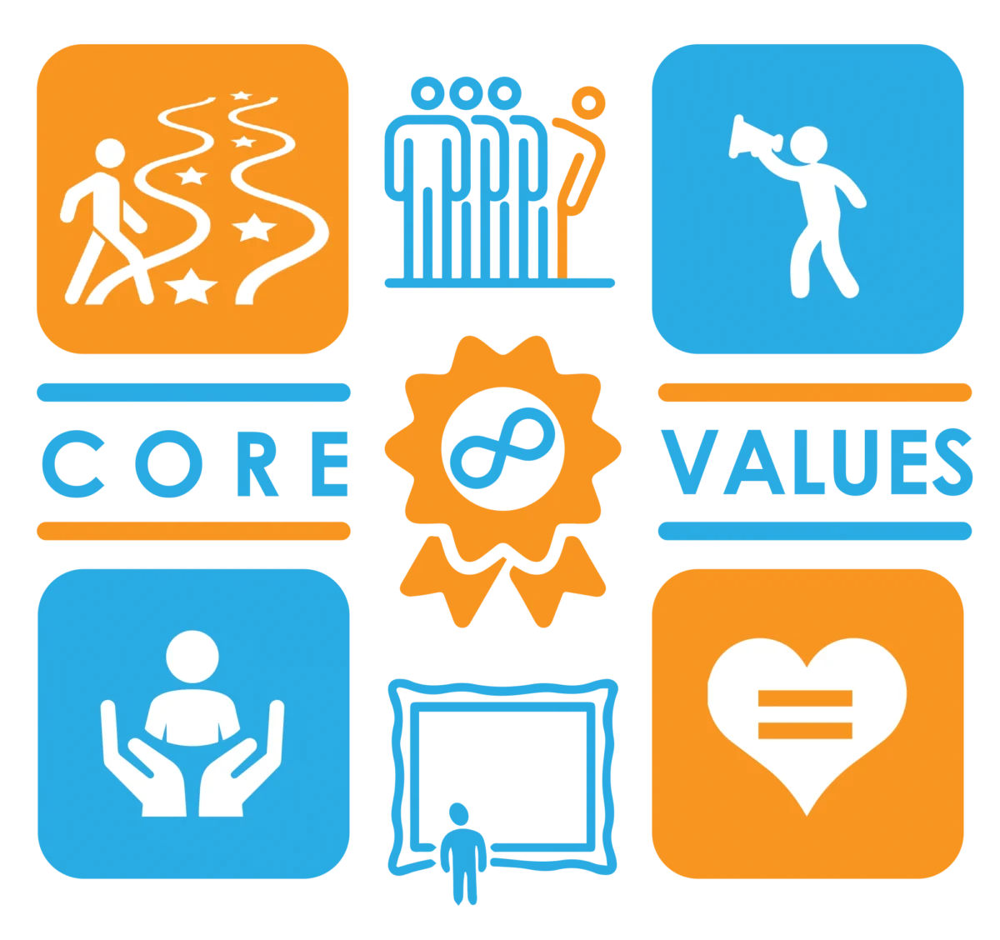
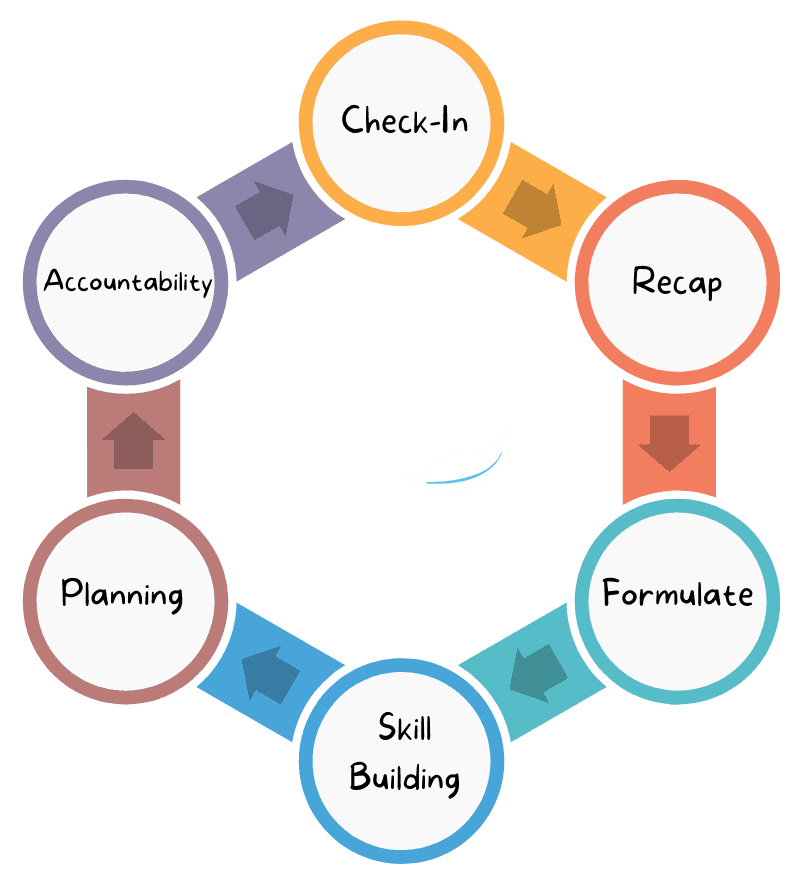
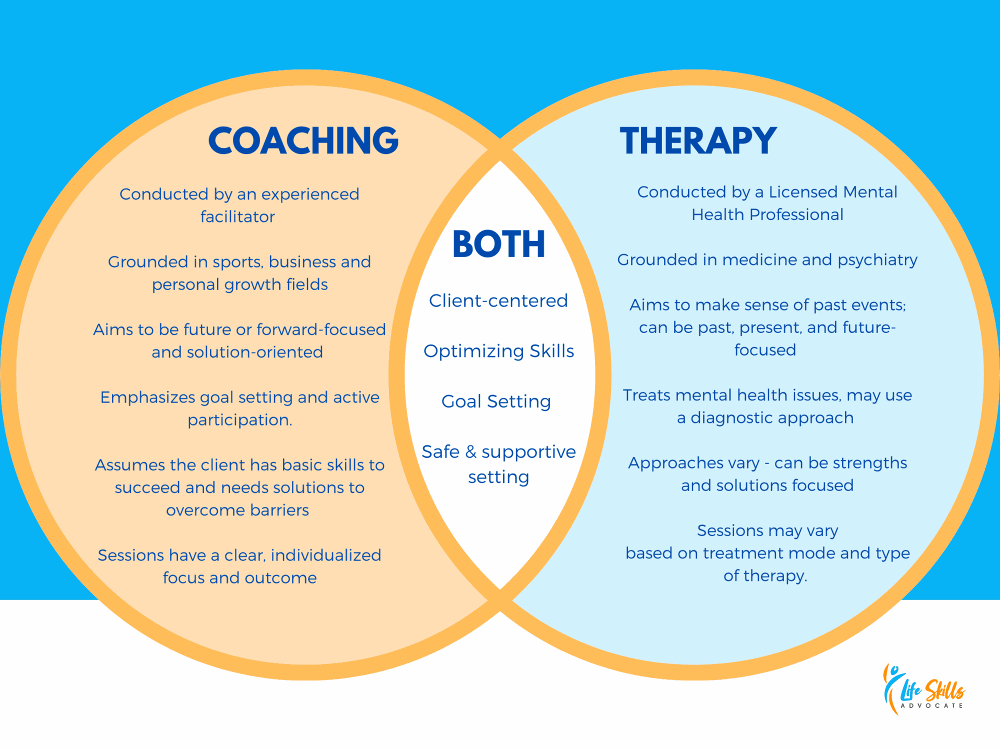

FAQs About Life Skills Advocate
What does Life Skills Advocate do?
Life Skills Advocate is your partner in navigating your neurodiversity.
We are a coaching and digital resource company that focuses on executive functioning and life skill development. With a special emphasis on supporting neurodivergent teens, adults, and their families, our coaching supports clients across real-world contexts: daily living, academic social, vocational, and more.
We also offer a wealth of online resources, many of which are completely free. These include our active blog, executive functioning assessment, workbook, cookbook, and a variety of other materials designed to assist anyone seeking to understand and navigate neurodiversity.
Our mission: Uplifting the neurodivergent community to embrace their strengths and self-advocate with confidence.
What sets us apart is our team of coaches, all of whom have lived experience with neurodivergence. This lived experience allows us to understand and relate to our clients on a deeper level, fostering a supportive, safe, and empathetic environment. We believe that this shared understanding enhances our ability to empower our clients, helping them to navigate their neurodiversity with greater confidence.
What is your mission statement?
Uplifting the neurodivergent community to embrace their strengths and self-advocate with confidence.
What are your core values?
There are 7 core values that drive everything we do:
- Walk the Neurodivergent Walk
- Courageous Contrarians
- Consistently Excellent
- Bravery in Advocacy
- Big-Picture Oriented
- People Over Profit, Yet Profit for the People
- Unwavering Impartiality
Learn more about our core values by clicking here.

Why does Life Skills Advocate exist?
Life Skills Advocate was inspired by the personal journey and professional insights of our founder, Chris Hanson. Living with ADHD, anxiety, and depression, Chris understood the challenges and the importance of having strong advocates. As a special education teacher, he recognized a gap in services that could empower neurodivergent individuals to navigate life's hurdles more effectively.
Chris wished for a support system during his own teenage years, a time of struggle and self-discovery. This wish became the driving force behind Life Skills Advocate. We exist to be the support that Chris wished he had, a beacon for neurodivergent teens, adults, and their families.
Our approach is rooted in Chris's experiences and insights. We focus on building confidence, enhancing skills, and tackling obstacles that may stand in the way of achieving goals. We are more than a coaching service; we are a partner in your journey, providing a safe, understanding, and compassionate environment. We are here to help you navigate your path, celebrating your successes and supporting you through challenges. Life Skills Advocate is your partner in navigating your neurodiversity.
What specific services do you offer?
At Life Skills Advocate, we provide Real-Life Executive Function Coaching to support neurodivergent individuals across various stages of life, including high school students, college students, young adults, and adults. Our coaching is designed to build essential skills needed for success in school, work, and everyday life.
Why choose Life Skills Advocate?
At Life Skills Advocate, we're more than just a coaching service. We're a team dedicated to empowering neurodivergent teens and adults through a personalized, client-focused approach. Here's what sets us apart:
- Shared Experience With Neurodivergence: Our coaches, including our founder, who has personal experience with ADHD, understand the challenges of neurodivergence firsthand.
- Client-Centric Relationships: We prioritize building strong, judgment-free relationships with our clients, understanding their unique needs and goals.
- Holistic: We take a holistic approach, considering the well-being of the entire family, when applicable. We work closely with families to support the student's development within their broader environment.
- We Go Beyond Executive Functioning: We specialize in supporting executive functioning skills while also addressing the social/emotional aspects of neurodivergence. Our coaching approach supports students in navigating both practical and social/emotional challenges, helping them manage school and life more effectively.
- Inclusive and Safe Environment: We provide a safe and inclusive space for LGBTQIA+ clients, understanding and respecting the unique intersection of neurodivergence and LGBTQIA+ issues. Our approach is tailored to support the whole person, recognizing the diverse challenges and experiences our clients may face.
- Gentle Accountability Support: We offer gentle, on-demand accountability support at no extra cost, keeping students motivated and on track.
Read more about what makes LSA unique by clicking here.
FAQs About Coaching
What types of clients do you work with?
At Life Skills Advocate, we are dedicated to empowering neurodivergent individuals aged 14 and above (and individuals right on the cusp) who face challenges with executive functioning skills in real-life contexts, such as school, work, and life.
We often work with individuals who have diagnoses such as ADHD, Autism Spectrum Disorder (ASD), and other neurodevelopmental diagnoses. However, a documented diagnosis is not a requirement in order to work with us. We understand that each person's experience with neurodivergence is unique, and we tailor our approach to meet their individual needs.
In cases where our clients are dealing with mental health conditions, we believe in a collaborative approach. While we provide coaching to enhance executive functioning skills and autonomy, we sometimes recommend that clients also engage with a mental health counselor. This collaborative approach ensures that our clients receive comprehensive support that addresses all aspects of their well-being.
While we acknowledge that a diagnosis may be part of our clients' experiences, we focus on the whole person and their unique needs. We are here to provide understanding and compassionate support as our clients strive for greater autonomy and independence. At Life Skills Advocate, we see you, we hear you, and we're here to support you.
Who might not be a good fit for coaching?
At Life Skills Advocate, we are committed to providing the most effective support for our clients. However, we acknowledge that coaching may not be the best fit for everyone. There are certain situations where you or your child might be better served by another professional:
- Lack of commitment to the coaching process: Coaching requires active participation and a willingness to make changes. If an individual is not ready or willing to engage in the process, they might not benefit fully from coaching. In such cases, books or online self-help resources might be a good starting point.
- Expectation that the coach will do all the work: Coaching is a partnership, and it requires effort from both the coach and the client. If a client expects the coach to solve all their problems without their active involvement, coaching might not be the best fit.
- Tendency towards physical aggression or unsafe behavior towards oneself or others: Safety is paramount in any coaching relationship. If there's a risk of harm to oneself or others, a different type of professional support may be needed. Options may include dialing 911 or 988 (Suicide & Crisis Lifeline) or by contacting your state's DDA office for more long-term support.
- Need for trauma-based or mental health support, without current help from a qualified mental health professional: While coaching can support personal growth and skill development, it's not a substitute for professional mental health services. Organizations like NAMI or therapists specializing in trauma who also understand neurodivergence can often provide the necessary support.
- Seeking a quick fix or a magic solution: Real change takes time and effort. If you're looking for an immediate solution, coaching might not meet your expectations.
- Looking for respite care: Coaching is an active, engaging process, not a form of supervision. Respite care services through your state's DDA office or home health care agencies might be better suited to meet these needs.
- Active overuse of drugs or alcohol without current help from a qualified professional: Substance use issues can complicate the coaching process and may require specialized support. SAMHSA has a national helpline and organizations like Alcoholics Anonymous (AA) or Narcotics Anonymous (NA) can provide help.
- Frequent missed coaching sessions: Consistency is key in coaching. If coaching sessions are frequently missed, it may hinder progress.
- Immediate crisis or emergency situation: Coaching is not equipped to handle immediate crises or emergency situations. In such cases, it's important to seek help from emergency services by dialing 911 or 988 (Suicide & Crisis Lifeline)
We believe in the importance of finding the right support for your needs. If you find yourself in any of these situations and need a referral, please feel free to contact us. We're here to help and will do our best to connect you with a qualified professional.
What does a typical coaching session look like?
At LSA, we believe in a flexible yet structured approach to our coaching sessions. Each session is tailored to the unique needs of our clients, ensuring a consistent and effective framework:

- Check-In: We start by assessing progress and discussing any challenges encountered since the last session. This is a time for reflection and open conversation about your experiences.
- Recap: Review the previous session's achievements and learning points. This helps us build on what's working and adjust what isn't.
- Formulate: Prioritize the goals and activities for the current session based on your specific needs and overall coaching plan.
- Skill Building: This is where we practice and develop essential life skills, tailored to your unique neurodivergent profile. We might work on skills like time management, decision-making, or problem-solving.
- Planning: We outline actionable steps and strategies for the upcoming week. This gives you a clear sense of direction and purpose moving forward.
- Accountability: We provide regular check-ins throughout the week, offering support and encouragement as needed. This is a key part of our service and is included at no extra cost.
This approach ensures you have ample time to process your experiences, collaborate with your coach, and actively apply the skills you're learning.
How do you measure client success?
We understand that success is a deeply personal concept, varying from one individual to another. Therefore, we collaborate closely with our clients to help them define their unique goals and learn how to track their progress towards achieving them.
We utilize a range of assessment tools and techniques to monitor progress and evaluate the effectiveness of our coaching strategies (e.g. SMART-A goals). This allows us to adapt our approach as needed, ensuring we're always providing the most beneficial support possible.
However, we believe that the most valuable feedback comes directly from our clients. Regular check-ins (at no additional cost) allow us to understand how they're feeling about their progress and make any necessary adjustments to our approach.
Success isn't always just about reaching a specific goal. It's also about the growth, learning, and self-discovery that happens along the way.
Do you collaborate with families, teachers, and other professionals during the coaching process?
When appropriate and at the discretion of our clients and their families, in our coaching process, we work closely with families, teachers, and other professionals who are part of our clients' support network.
This collaborative approach allows us to ensure that the strategies we teach can be applied effectively across various real-life settings and situations and that a common language is being used.
By aligning these strategies, we can significantly enhance the likelihood of skills being effectively adopted and used consistently. This collaborative approach is an integral part of our service and is key to our clients' success.
Where do coaching sessions take place?
We meet with clients virtually over Zoom, which enables us to connect with you wherever you are.
Do you provide check-ins between sessions?
Yes, we do provide on-demand support and gentle accountability check-ins between sessions at no additional cost. We understand that questions and challenges don't always arise during scheduled sessions, so we maintain open lines of communication with our clients and their families.
However, it's important to note that we are mindful of the balance between providing support and fostering independence. Our goal is to help our clients autonomy and independence. This is why we carefully monitor what this support looks like to ensure it empowers rather than enables.
How does the approach of coaching differ from that of therapy?
Coaching and therapy serve different but complementary roles. We often say that while coaching isn't therapy, it's innately therapeutic.
In general terms, coaching focuses on actionable, forward-looking strategies and tangible outcomes. We concentrate on enhancing executive functioning skills, leading to improvements in daily life, work, and school performance, and a better understanding of one's own neurodivergence.
On the other hand, therapy typically delves into emotions, past experiences, and trauma, providing a space for healing and understanding.
While we frequently collaborate with therapists to provide a comprehensive support system, our coaching services should not replace professional mental health or medical care. It's important to remember that our coaches do not act as mental health counselors or medical professionals.

What is the investment for coaching services?
At LSA, we believe in transparency, especially when it comes to the investment in our services. Our hourly rate for coaching is $220.
Can I use insurance or access a sliding scale discount for your services?
At Life Skills Advocate, we understand that financial considerations are important. However, as coaching is a non-clinical service, it is not typically covered by insurance.
Flexible Spending Account (FSA) Reimbursement for Coaching
Your FSA might reimburse for our services. We will provide necessary documentation for you to explore this option. For more detailed information about FSA reimbursement for executive function coaching, please review the information below.
Exploring Additional Funding Options
To further expand the accessibility of our services, we are actively exploring local, state, and federal grants and partnerships with organizations that align with our mission. If you are aware of any grants or funding opportunities that could extend our reach, please contact us at admin@lifeskillsadvocate.com.
Is there a minimum commitment required for coaching?
Short answer: no.
While our coaching program is not bound by a fixed duration, we recommend a minimum commitment of 12 weekly sessions to see meaningful change. However, the exact length of coaching varies based on your student's goals and situation.
Do you have any client case studies you can share?
Yes, we do!
Click here to read one of our real-life client success stories.
Where can I learn more about your coaches?
Click here to visit our team page. Each of our coaches has their very own page on our website where you can read their bio and learn more about their coaching style.
What are the backgrounds of your coaches?
At Life Skills Advocate, our coaches bring a wealth of diverse experiences to their roles. Each coach has personal lived experience with neurodivergence, which allows them to connect deeply with the students and families they work with.
Professionally, our coaches come from a range of coaching or coaching-adjacent fields, including special education, mental health counseling & social work, among others.
We also provide comprehensive internal training and regular professional development to ensure that our coaches are equipped with the latest tools and strategies to support your high schooler effectively.
Can I request a specific coach to work with?
Absolutely. After scheduling your complimentary discovery meeting, you'll be prompted to fill out a short form. On that form, there's a place to optionally select a specific coach you'd like to work with.
Click here to read our coach bios.
Can I request to switch coaches if needed?
Yes, we are happy to accommodate your preference for a coach. We want you to feel comfortable and confident in the coaching relationship, so please don't hesitate to let us know if you'd like to switch coaches.
How do I get started?
You may schedule a complimentary 30-minute discovery meeting anytime by clicking here.
FAQs About Pricing
What is the investment for coaching services?
At LSA, we believe in transparency, especially when it comes to the investment in our services. Our hourly rate for coaching is $220.
Are there financial aid or funding options for coaching?
Yes. While coaching is a private-pay, non-clinical service and is not typically covered by insurance, some clients reduce their costs through FSA/HSA funds, employer programs, or our partnership with the Canopy Neurodiversity Foundation.
For details and simple step-by-step guidance, visit our Financial Aid for Executive Function Coaching page.
FAQs About Miscellaneous Topics
I have a question that isn't listed here. How can I get it answered?
Feel free to email admin@lifeskillsadvocate.com and we'll get back to you within 2 business days.
How can I refer someone who I think might be a good fit for your services?
If you know someone who might benefit from our services, we'd be delighted to hear from you. The best way to connect us with potential clients is by sharing our email address, admin@lifeskillsadvocate.com.
If you'd like to discuss a specific case before making a referral, we're more than happy to schedule a meeting. Simply reach out to us at the same email address.
Is Life Skills Advocate currently hiring?
We're always eager to connect with individuals who align with our mission and core values. We regularly seek out coaches, both locally and virtually, to join our team. For the most up-to-date list of open positions, please visit our careers page.
If there are no current openings, we still welcome your interest! Feel free to email your resume to careers@lifeskillsadvocate.com with the subject line "LSA Career Inquiry" for future consideration.
We appreciate your interest in becoming part of our mission to empower neurodiverse individuals and their families.
Where can I read your website's legal pages?
Our legal pages can be found in the bulleted list below and in the footer section: